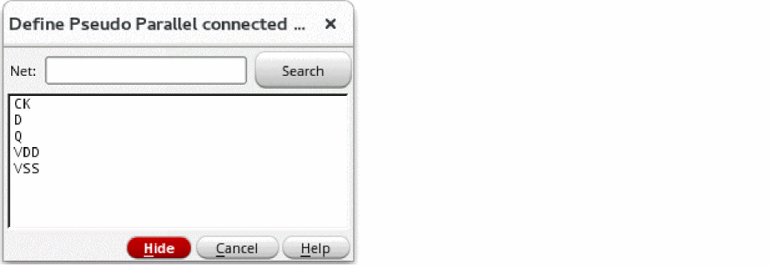

Defining Pseudo Parallel Connected Nets
Pseudo parallel connections are like must connects within an instance and represent cases where instance terminals do not need to be connected because current does not pass between them.
To define a set of instance terminals on a net for pseudo parallel connection:
-
In the layout window, choose Connectivity – Pins – Pseudo Parallel Connect.
The window prompts you to click to select a net.
You can select a net by selecting a shape in the layout before you choose the Pseudo Parallel Connect command. -
To select the net that includes the instance terminals you want to connect, click a shape on that net.
Flight lines appear, connecting only the pins of the net you choose. The flight lines are drawn between pins that can be pseudo parallel connected. If incomplete nets are being displayed, the other net flight lines disappear.
Selecting a net does not make a connection change.
If you did not select a net or instance terminal before you chose the command, the Layout window prompts you to select an instance terminal, instTerm. -
To select the instance terminals you want to connect in pseudo parallel connection, click one or more pins in the selected net.
You can click an instance terminal,Shift+click subsequent pins, or select terminals by area by clicking and dragging with the right mouse button.
Clicking on the instance terminals of the selected net makes the connection change.
When you define the connection of each terminal, the flight line display of the net changes immediately to show the connection.
You can also use the Define Pseudo Parallel Connected Pins options form to select nets. -
Press
F3to open the Define Pseudo Parallel Connected Pins form, while the Pseudo Parallel Connect command is active.
The form lists all nets without I/O pins, except le_ex_# nets.
 -
Type the name of a net in the Net field or click the net names in the list box of the form to select them.
To select more than one net at a time to work on, you can:- Choose multiple nets in the form.
- Use drag-by-area when the command line prompts you to select a net.
You must define pseudo parallel connectivity within a net. You cannot define pseudo parallel connectivity between nets. -
When you are finished, press the
Esckey to cancel the command.
When you define pins as pseudo parallel connects, the router does not route them.
Using the right mouse button, you can change from the Pseudo Parallel Connect command to the Must Connect command, to the Weakly Connected command, to the Strongly Connected command.
Related Topics
Define Net/Pin Connections Form
Return to top